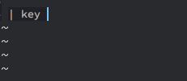

1 Org Mode
本博客的博文是在Spacemacs上通过Org Mode写作的，然后由Pandoc转换成HTML格式的内容。
本篇主要的内容就是测试Pandoc对Org Mode的支持情况是否满足日常使用需求，也方便以后写作时查阅。
1.1 标题Title
子标题在行首以星号*加空格指定，几个星号就代表几级标题。
1.2 段落Paragraph
段落之间以至少一行空行为分隔，也可以通过 \\ 强制段落内换行。
段落一的第一行
段落一的第二行
…
段落一的第N行
段落二的第一行
1.3 链接与图片
链接分为分为外部链接和内部链接。
外部链接，一般就是URL： 
内部链接，也就是引用当前文档的某个位置。
可以通过以下方式标记位置：
<<target>>
其中 target 需要取一个有意义的、文档内唯一的名字。
然后通过以下方式引用，与HTML的锚类似：
[[#target][description]]
戳这个可以跳转到本章节起始位置☞ 链接与图片 。
快捷键是 SPC m i l ，代表在Spacemacs(SPC)当前模式(Mode)下insert link。
1.4 列表
列表分为有序列表和无序列表。
- 有序子项目一
- 无序子项目 1
- 子项目1的描述
- 无序子项目 2
- 子项目2的描述
- 有序子项目二
- 无序子项目 1
- 无序子项目 2
以数字+ . 或 ) 表示有序列表项：
- 有序子项目
以 - 或 + 表示无序列表项：
- 无序子项目
1.5 字体样式 font style
字体样式常用的有粗体、斜体、下划线、删除线、上标、下标等。
/斜体字/ 对应 斜体字
*粗体字* 对应 粗体字
+删除线+ 对应 删除线
_下划线_ 对应 下划线
~字面量~ 对应 字面量
=等宽字= 对应 等宽字
H_{2}O 对应 H2O
X^2 对应 X2
可以看出来目前Pandoc并不支持下划线的样式。
1.6 公式
比较考验排版能力的数学公式，通过LaTex表示毫无压力、逼格满满。
正文显示公式：\(\sum_{i=0}^N\int_{a}^{b}g(t,i)\text{d}t\)
单独显示公式：\[\sum_{i=0}^N\int_{a}^{b}g(t,i)\text{d}t\]
If \(a^2=b\) and \( b=2 \), then the solution must be either \(a=+\sqrt{2}\) or \(a=-\sqrt{2}\).
需要注意的是，这个特性的支持需要开启Pandoc的mathjax选项。
1.7 分隔线
5个以上横杠 - 单独为一行可以显示分隔线：
1.8 插入引用或者代码
引用：
Stay Hungry. Stay Foolish – Steve Jobs
插入elisp代码：
C代码：
js代码：
org代码：
#+BEGIN_EXAMPLE
举栗子给猴看
#+END_EXAMPLE
居中文字：
居中的文字
verse测试：
This is verse
目前Pandoc并不支持通过 #+INCLUDE: 插入文件内容
1.9 脚注Footnote
脚注1主要有数字脚注和命名脚注。
在行首以下面的方式可以定义脚注：
[fn:数字] 数字脚注内容
[fn:名字] 命名脚注内容
在文中通过 [fn:数字] 或者 [fn:名字] 引用即可。
创建脚注的快捷键是 SPC m i f ，代表在Spacemacs(SPC)当前模式(Mode)下insert footnote。
脚注和原文之间的跳转也十分简单，在方框内敲回车即可。
1.10 表格Table
Org Mode下创建表格十分简便，基本上组合使用 | - Tab 这几个按键即可。
表格自动对齐和跳转使用 Tab 和 Shift Tab ，谁用谁知道  。
。

| key | value |
|---|---|
| long key | long测试中文 |
1.11 TODO 待测试
不常用的特性还没测试。如果有某些特性需要我帮忙测试的话，可以在下面留言^_^。
1.12 DONE 已完成
CLOSED: <2017-09-07 Thu 16:56>
已完成大部分常用特性的测试2。